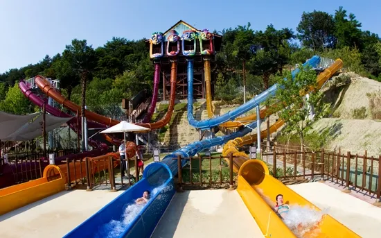

메가스윙은 케리비안베이를 대표하는 어트렉션으로 최고속도는 50km/h, 낙하 횟수는 4회로
최대 6명까지 탈 수 있으며 몸무게의 총합이 480kg을 넘지 말아야 한다.

1.메가 스톰
메가스윙은 케리비안베이를 대표하는 어트렉션으로 최고속도는 50km/h, 낙하 횟수는 4회로
최대 6명까지 탈 수 있으며 몸무게의 총합이 480kg을 넘지 말아야 한다.
2.와일드 블라스터
와일드 블라스터는 캐리비안 베이에 위치한 워터 슬라이드이다. 총길이 1,092m로 국내 최장 길이를 자랑하며
낙하 횟수는 5회이고 탑승 인원은 최대 2명이다.

3.아쿠아 루프
아쿠아 루프는 캐리비안 베이 내에서 스릴의 강도가 가장 높은 어트랙션으로 바닥이 열리면서 급하강하는 것으로 유명하다.
최고 속도는 60km/h로 케리비안베이 내에서 가장 빠르고 트랙의 길이는 96m이다.
